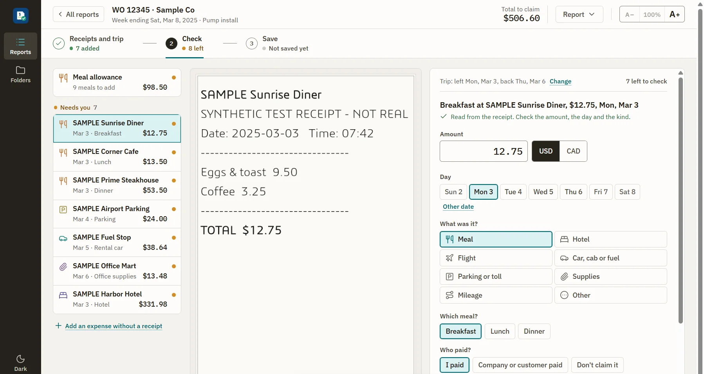
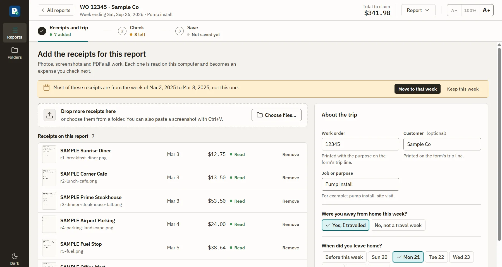
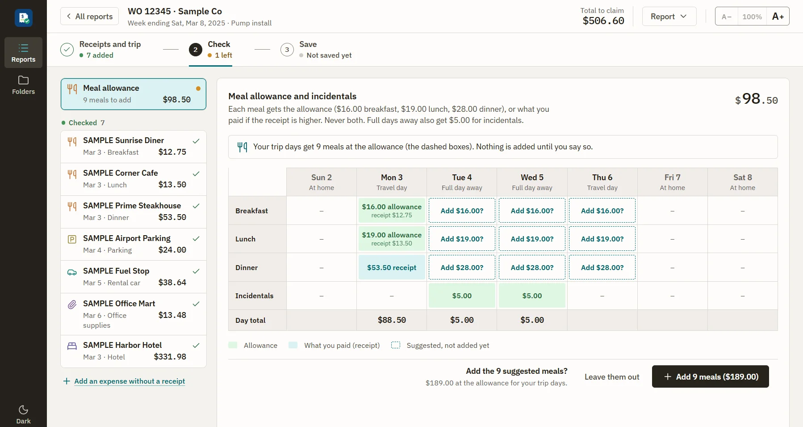
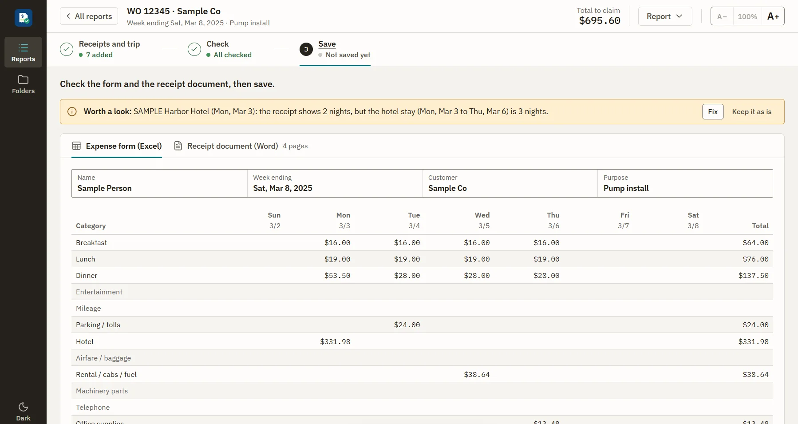

Receipts in. The weekly form out.
Drop in the week's receipts. The app reads them on your PC and fills in the SFT weekly expense form and the receipt packet for your manager.
Installs for your user only, no admin rights needed. It updates itself when a new version is out.

The two files you used to build by hand.
Each report is one work order and one week. When you save, both files land in the trip folder you already keep, named so you can find them later.
formulas, all identical to HR's 2025 template. Saved forms were recalculated in Excel itself across 6,822 formula cells, with no differences.
Three steps, every week.
Start a report with the work order, the week ending and the trip folder. Then the app walks you through the same three steps.



Screens show made-up sample receipts.
Drop in photos, screenshots or PDFs.
Each receipt is read on this computer and becomes an expense with its vendor, date and amount.
- Flight, hotel and rental car receipts fill in your trip days
- Paste a screenshot straight in with Ctrl+V
- Tells you when receipts belong to a different week
Check each expense beside its receipt.
Confirm the amount, the day and the kind. Your edits always win over what was read.
- Meals follow the SFT policy: the allowance, or the receipt when it is higher, never both
- $5.00 incidentals on the full days of a trip
- Mileage worked out from the miles you drove
See the form as it will print, then save.
One click writes the expense form and the receipt packet into your trip folder.
- Total, less advances, and net due
- Carry a long trip into next week in one step
- Everything saves as you go
Install in a minute.
One installer and nothing else to download. The SFT form and the receipt reader are built in.
- Download the installerThe file is ExpenseReportCreator-version-Setup.exe.
- Run it Windows may say "Windows protected your PC", because the app is not code-signed yet. Click More info then Run anyway
- Enter your nameThat's the whole setup. Start your first report with a work order and a week ending.
Stays on your PC
Receipts, reports and forms never leave your computer. No account, no cloud, no tracking.
One network call
The app only checks this page's repository for updates. Offline, everything still works.
Not an HR system
It fills in the form you already hand in. Your manager and accounting still review every report.